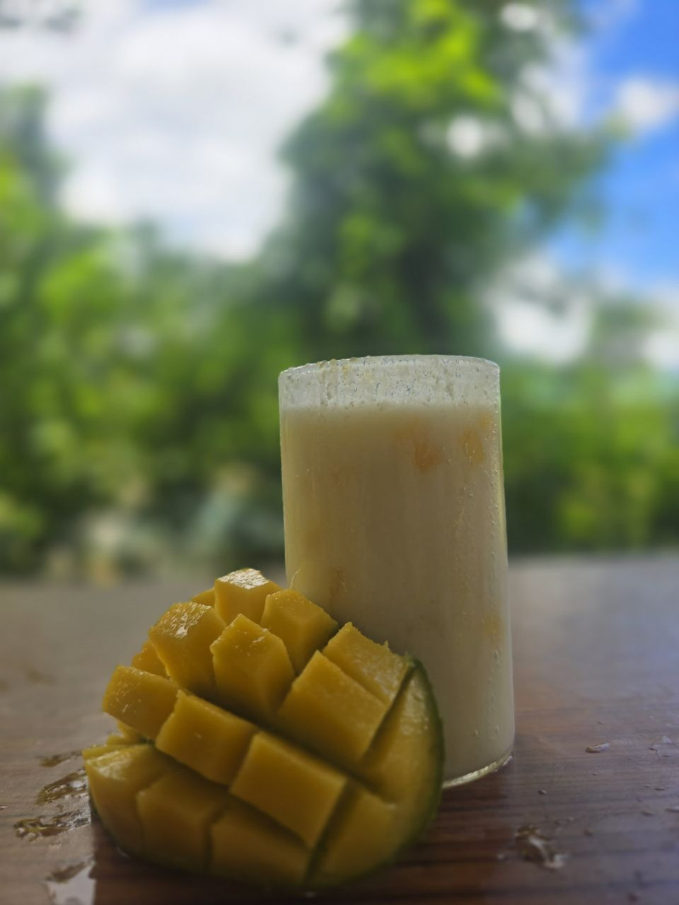

Mango Lassi: A Taste of Summer
Experience the refreshing and delightful flavor of our Mango Lassi. Made with fresh, ripe mangoes and creamy yogurt, it's the perfect way to cool down and treat yourself.

Positive Health Impacts
Mango Lassi is not just a tasty treat; it's also packed with health benefits:
- Aids Digestion: The yogurt in lassi is a great source of probiotics, which are beneficial bacteria that help improve gut health and digestion.
- Rich in Vitamins: Mangoes are an excellent source of Vitamin C and Vitamin A, which are essential for a healthy immune system and good vision.
- Boosts Energy: The natural sugars from mangoes and the proteins from yogurt provide a quick and healthy energy boost.
- Hydrating: As a liquid beverage, it helps keep you hydrated, especially during hot weather.
Traditional Preparation Method
At Lassi Valley, we follow a simple, traditional recipe to ensure the authentic taste of our Mango Lassi:
- Ingredients: We use fresh, sweet mango pulp, thick yogurt (dahi), a touch of sugar (or a natural sweetener), and a hint of cardamom powder for fragrance.
- Blending: All ingredients are placed in a blender and mixed until they form a smooth, creamy consistency.
- Garnishing: The lassi is poured into a glass and often garnished with a few strands of saffron or a sprinkle of chopped pistachios.
- Serving: It is best served chilled, offering a refreshing and cooling experience.